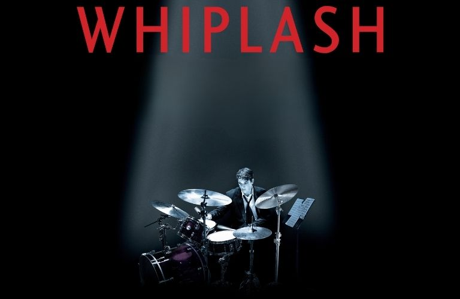

El Jazz
El jazz és un moviment musical nascut al final del segle XIX. Al principi era una música de ball i entreteniment al sud dels Estats Units i ara es considera un dels estils més importants d'arreu del món. S'han creat molts festivals per donar importància a aquest tipus de música que tant ha influenciat als estils de música moderna. En aquest tema treballarem els orígens del jazz, la seva evolució i les diferents migracions juntament amb els instruments i artistes més importants.
Origen del Jazz
América del nord
Estils de Jazz
La llibertat que caracteritza el jazz va facilitar que evolucionés en multitud d'estils i tendències diferents. Així doncs, van sorgir nous estils musicals:
SWING (1930)
És un jazz ballable que va tenir molt d'èxit comercial. Aquest estil el tocaven les big bands amb arranjaments molt elaborats i limitaven la improvisació a intervencions d'algun solista en moments puntuals.
BE BOP (1940)
Va sorgir com a reacció dels músics afroamericans a la rutina de les bandes de swing, que no deixaven espai a la improvisació. Aquest estil s'interpretava en petits grups (combos) i es caracteritzava per tempos ràpids, un fraseig irregular, improvizacions virtuoses. El bebop era un estil per escoltar. Els instruments rítmics, com la bateria, s'independitzen i acaben fent papers melòdics. El tempo és ràpid i hi ha un ús predominant de corxeres i semicorxeres i melòdicament destaca el registre agut dels instruments.
COOL JAZZ (1950)
A la dècada dels cinquanta, va sorgir un tipus de jazz més calmat, equilibrat i contingut que el bebop. El cool jazz incorpora influències de la música europea i s'allunya de les arrels afroamericanes del jazz.
FUSIÓ (1960)
A partir de la dècada dels seixant apareixen noves tendències molt diverses que renoven el jazz fusionant-lo amb elements d'altres gèneres musicals, com ara el jazz rock, el flamenc jazz o el jazz llatí.
TREBALL: Comentari d'un concert de Jazz.
Dirigeix-te al Classroom per veure les instruccions del treball.
